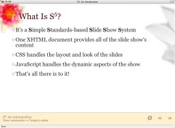
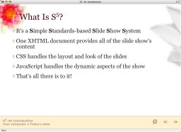
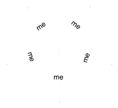
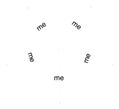

What Is S5?
- It's a Simple Standards-based Slide Show System
- One XHTML document provides all of the slide show's content
- CSS handles the layout and look of the slides
- JavaScript handles the dynamic aspects of the show
- That's all there is to it!
Operatic Origins
- Opera 4 introduced Opera Show, a projection-mode style sheet technology
- Allows a single XHTML document to be turned into a PowerPoint-like slide show
- Adding screen and print style sheets allows for multi-medium views of a single document
- Highly efficient, but highly browser centric...
Expanding The Field
- When Opera 7.5 for OS X came out, the banner ads persisted in projection mode
- Tantek Çelik created a JavaScript-driven slide show technique that worked on multiple browsers
- Unfortunately, it required each slide to be ID'ed ahead of time, making additions and rearrangement difficult
- Navigation was only linear; no way to jump to an arbitrary slide
- There was also no facility to "switch off" the slide show styles short of killing all CSS
- Motive and opportunity combined to point the way...
Where We Are Now
- S5 builds on Tantek's scripts and ideas, with input and ideas from several other people
- Each slide is enclosed in a classed element; IDs are dynamically assigned via JavaScript
- Navigation menu is automatically built at run time
- The S5 format is compatible with Opera Show Format 1.0, making it easy to move slides between the two formats as needed
- S5 can also run slide shows based on XOXO
How It Works
- Controls are...
- Next slide: Space bar, return, right arrow, down arrow, page down, click anywhere in slide that isn't in the control area (lower right corner), click "arrow" in lower right corner, accesskey "X"
- Previous slide: Up arrow, left arrow, page up, click "arrow" in lower right corner, accesskey "Z"
- Toggle the slide styles: Click on the toggle button (to the left of the arrows), press "t", accesskey "T"
- To invoke the navigation menu: mouse into the lower right corner of the slide (below the navigation arrows)
The Advantages
- With one file, you get a slide show, a printable outline, and a screen presentation
- Files are incredibly lightweight and compress easily
- Thanks to being semantic XHTML, slideshow files are also highly accessible
- New slide themes can be created simply by writing new style sheets
- Unlike Opera Show, which has all of the above advantages, S5 works in multiple browsers
S5 Default File Structure

S5 Themes


 
(just a sampling)

(just a sampling)
Features New to 1.1
- Incremental display of slide content
- Font scaling based on window size
- Support for PNG alpha channels in all supporting browsers, including IE/Win
- Ability to jump to any slide, or skip a number of slides, via keyboard commands
Incremental Animation
- A demonstration of just one of the many ways to accomplish simple animation-like effects (using a diagram from "XFN and...")


 

Current Limitations
- Only one author can be listed in the metadata
- Opera falls back to use OperaShow; thus no extras (like the navigation menu or progress indication) are available
- Images are not scaled along with the text when the window size changes
Open To The Public
- S5 1.1 is released under an explicit Public Domain license
- Contributors to S5 must be willing to accept those terms
- In other words: if you submit a contribution, you are agreeing to abide by and place your contributions into the Public Domain along with S5
- On the other hand, anyone can freely use S5 for their own presentations or modify S5 to suit their needs
In Summary
- With minimal scripting, we have recreated and improved upon a (currently) browser-specific technology, making it cross-browser in the process
- New themes are just a matter of writing a new style sheet
- The S5 format is OSF 1.0 and XOXO compatible
- S5 is a very flexible and lightweight slide show system available for anyone to use